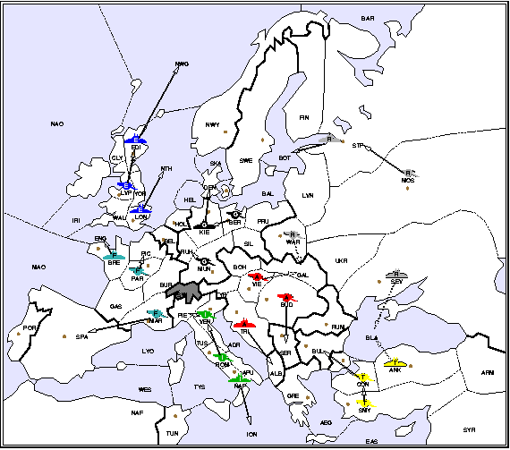

BUDAPEST - War was immanent. The Sultan and the Czar where clearly eyeing the Balkans and each other, as the Black Sea was dotted with White and Yellow war ships, each trying to out maneuver the other. Persistent rumors from Warsaw talked about a blood bath in Galicia. News for the north were grim as well. Intelligence reports suggested France was about to join forces with Germany, which spelled trouble to Italy, our neighbor to the west. It was clear that the French threat to Italy in the west and the Sultan from the south were the largest. But how do you defend on opposite fronts while not letting the Czar build a new palace in Bud? Italy, not surprisingly, was on the same page.
We had to move fast, aggressively and with total confidence in each other. The most important commodity was time. The sultan was clearly out of position with his fleet in Ankara poised to attack Russia rather than threatening Greece or assisting his armies through the narrow Dardannels straits. It became clear that the Italian navy could not go on its traditional vacation in Tunis, yet skipping Tunis meant that Italy will not be able to get reinforcements quickly. A weak Italy is a dead Italy... It was out of the question. Then there was the question of holding off the Czar. We could pretend to work with him but unless we get massive forces the front quickly we will not be able to hold him for long.
I called in the Italian ambassador and suggested to build the Orient Express - a railway from Rome through the Balkans and down into the shores of the Black Sea. The plan was simple, but many sections along the route had to be captured before the railway could be built. There just weren't enough Austrian forces to do the job. Italian forces had to be part of the construction effort. "While the Austrian forces move south, Italian units should move into Trieste'' I told the ambassador. "and while they construct the railway to Serbia" , I added, "they could also recruit local forces to help in the war effort and thus allow the Italian navy to skip Tunis and move strait on to the Aegean Sea.''
There were two more issues that had to be resolved quickly. France was about to sign an alliance with Germany. This meant trouble to England in the short term but unless France will stab Germany its second target will be Italy. We had to put pressure on France in the south and try to lore Germany into an alliance with England and Italy. On the south front, I approached Turkey and suggested to help in capturing Rumania in exchange for Greece. The possibility of two builds and two armies across the Dardannels by the end of 1901 was too good to pass over - the Sultan was delighted. In the mean time I proposed the Czar to open north and promised to help him get Rumania in the fall.
| S1901M - The Decoy: | ||||||||||||||||||||||||||
| ||||||||||||||||||||||||||
|  | ||||||||||||||||||||||||||
|
The northern alliance was in disarray. France was knocking on the gates on London while Marseilles was under attack. With England obviously committed against France after the stab and Italian forces moving west, it was not hard to convince Germany to switch sides.
Now that the northern alliances was reshuffled the stage was set.
| F1901M - The Stab: | ||||||||||||||||||||||||||
| ||||||||||||||||||||||||||
|
The Orient Express was now ready. Italy got an important build and had a fleet in Aeg by Fall 1901. Russia was delighted but under pressure by the Yellow fleet in the Black Sea. Turkey was upset.
Yet, I was stabbed! I sent for the Russian ambassador and requested help. Turkey had only one build but if that will be a fleet in Ank it spelled trouble to the Russian empire. In the mean time Italy met with the Sultan delegate regarding the new possibilities for cooperation. It was clear that Italy was not going after Turkey but rather after Austria. The message was clear, Turkey should take advantage of the weakness of Russia while Italy will go after Greece. They can then cooperate on getting Serbia.
| S1902M - Untying the Knot: | |||||||||||||||||||||||||||||||
| |||||||||||||||||||||||||||||||
|
| F1902 - The Orient Express Arrives: | ||||||||||||||||||||||||||||||
| ||||||||||||||||||||||||||||||
|
To review our position:
Italy : +Tri, +Rum, +Tun = 6 SC --- builds: F Naples, A Venice
Austria: +Ser, +Bul, +Gre -Tri = 5 SC --- builds: A Vienna
The Orient Express has arrived. I/A now has:
Armies: Boh, Vie, Bud, Rum, Bul, Ven, Pie
Fleets: Aeg, Eas, Tun, Nap
Editor's Note:
The moves for the powers other than Italy and Austria are approximations of what actually occured during this game.
This Orient Express was built and set in motion in round four of the North America Championship, Feb 2001 in Denver. My trustworthy Italy was played by Matt Shields while Dan Mathias played Turkey. The Diplomatic Pouch's own Ry4an Brase had the misfortune of playing England. By 1906 we were both above 10 SCs. Time was running out both for the game and the tournament. With a win in this game I would have won the tournament....
I went for the win and stabbed Italy, but of course Italy knew this was coming. Going into Fall 1908 I had 14 SC - exactly what was needed for a win under the Regatta rules. The question was will I be able to hold on to the 14th center or will Germany take it from me. It was a pure guess and ... I guessed right! Only Matt gave Germany one of his SC making him a 13 SCs power with no time left. The ARMADA rules requires at least a two SC lead to win....

|
Yarden Livnat (Yarden@cs.utah.edu) |
If you wish to e-mail feedback on this article to the author, click on the letter above. If that does not work, feel free to use the "Dear DP..." mail interface.